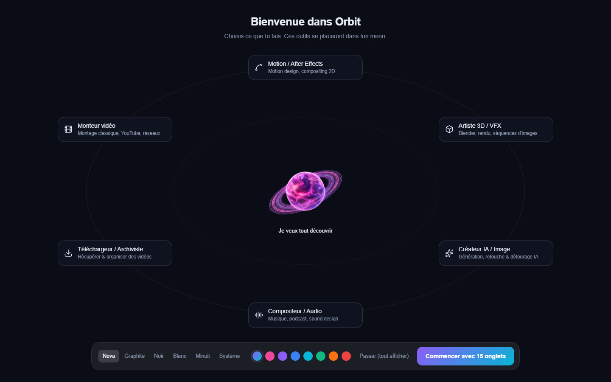

Installation
Installer Orbit
- Téléchargez l'installeur : bouton Télécharger Orbit en haut à gauche de cette page, ou la page
des versions d'Orbit (fichier
Orbit-Installer.exe). - Lancez
Orbit-Installer.exeet suivez la fenêtre d'installation. - À la fin, cliquez sur le bouton de lancement : Orbit s'ouvre.
Orbit s'installe pour votre compte Windows seulement (aucun droit administrateur demandé) et crée un raccourci Orbit sur le bureau et dans le menu Démarrer.
Si Windows affiche « Windows a protégé votre ordinateur », cliquez Informations complémentaires puis Exécuter quand même. Ce message apparaît pour les applications récentes que Windows ne connaît pas encore.
Premier lancement
Au premier lancement, Orbit vous demande ce que vous faites (monteur vidéo, motion design, 3D, audio, téléchargement, création d'images…). Selon vos choix, il n'affiche que les outils qui vous servent ; Je veux tout découvrir garde tout. En bas, vous choisissez aussi le thème et la couleur d'accent.


Vous pouvez relancer cet assistant à tout moment : Réglages › Apparence › Assistant de démarrage › Relancer. Les onglets masqués restent accessibles par la recherche (Ctrl+K) et par le Menu.
Les modules installés à la demande
Orbit reste léger : les moteurs lourds ne sont téléchargés que la première fois que vous en avez besoin (ffmpeg, yt-dlp, moteurs IA, modèles). Chaque outil propose un bouton Installer quand il lui manque quelque chose, avec une barre de progression. La page Réglages › Modules & IA liste tous les modules, leur taille et leur état, et permet de les installer ou de les mettre à jour d'un coup.
Les modules et les modèles sont rangés dans le dossier .orbit de votre dossier utilisateur
(C:\Users\<vous>\.orbit). Réglages › Système › Dossier de données Orbit › Ouvrir l'affiche.
Mises à jour
Orbit se met à jour tout seul : au lancement, il vérifie s'il existe une nouvelle version, la télécharge en arrière-plan et l'installe au redémarrage suivant. Après une mise à jour, une fenêtre présente les nouveautés.
- Pour vérifier à la main : Réglages › À propos › Vérifier les mises à jour.
- Le moteur de téléchargement (yt-dlp) se met aussi à jour tout seul à chaque lancement, pour suivre les changements des sites.
Si une version trop ancienne est détectée, les outils IA affichent Mise à jour requise avec un bouton qui installe la dernière version.
Désinstaller
Paramètres Windows › Applications › Applications installées, cherchez Orbit, puis Désinstaller.
Le dossier .orbit (modules, modèles IA, réglages) n'est pas supprimé : effacez-le à la main si vous voulez
récupérer l'espace disque.